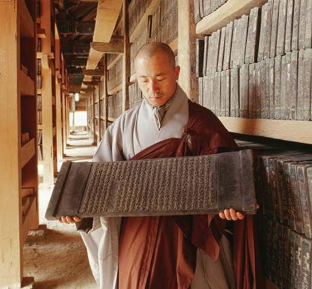
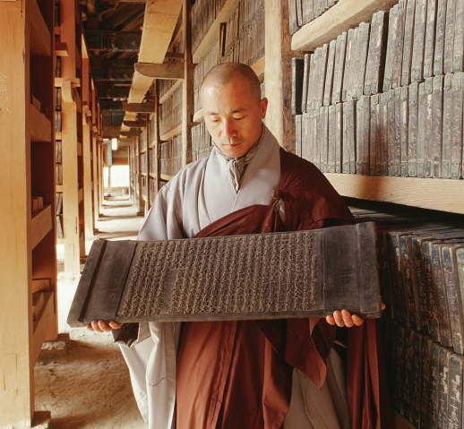
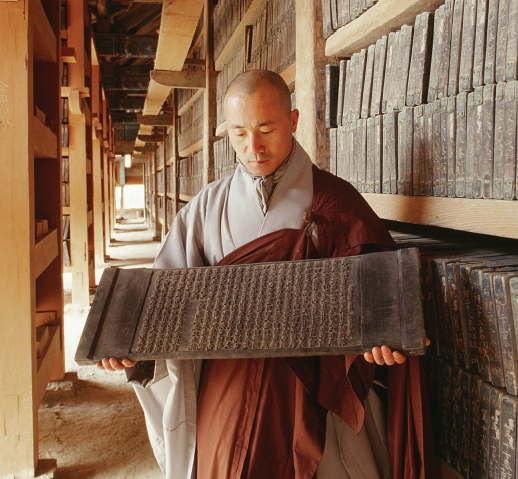

Korea’s vibrant cultural legacy, comprising music, art, literature, dance, architecture, clothing, and cuisine, offers a delightful combination of tradition and modernity. South Korea preserves a wealth of priceless cultural heritage, the majority of which have been inscribed on UNESCO’s World Heritage List to be protected for future generations.
Since the earliest settlements during prehistoric times, the people of Korea have developed a unique culture based on their outstanding artistic sensibility. The geographical conditions of the peninsula provided Koreans with opportunities to receive both continental and maritime cultures and ample resources, thereby forming original cultures of interest to and value for the rest of humanity, both then and now. Korea’s vibrant cultural legacy, comprising music, art, literature, dance, architecture, clothing, and cuisine, offers a delightful combination of tradition and modernity.
